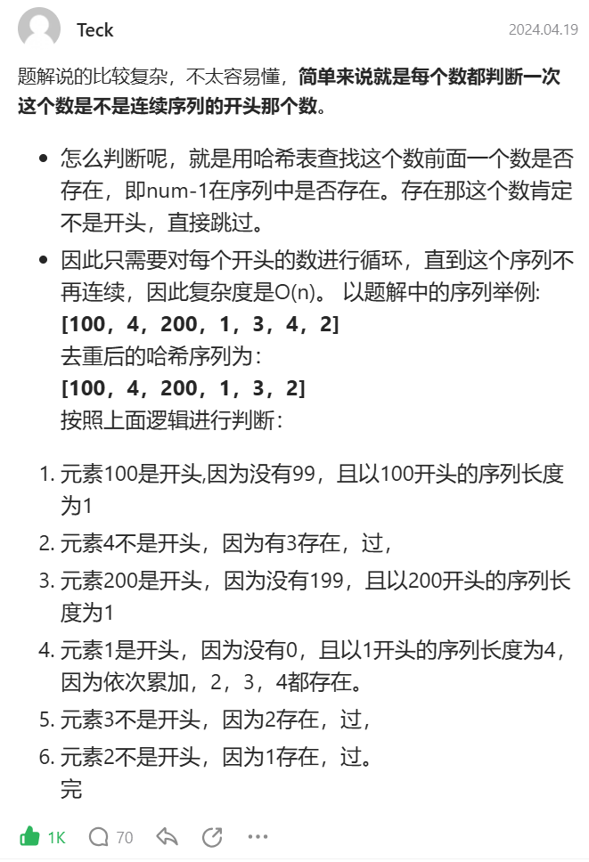
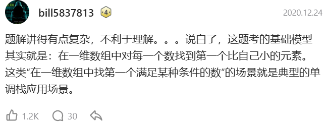

algorithm

算法难度高，所以只有早上能够进入心流通道，其他时间不适合。
开发相关可以放到其他时间。
hot100
day1
哈希表-两数之和
参考题解：思路图解 programmercarl.com、代码实现 leetcode.cn
重点：Map，key 为数组值，value 为数组索引。
思路：


哈希表-字母异位词分组
思路：排序，哈希表
代码：
代码里有很多不知道的用法。如 Map.getOrDefault 和 ArrayList<List<String>>(map.values())。
class Solution {
public List<List<String>> groupAnagrams(String[] strs) {
Map<String, List<String>> map = new HashMap<>();
for (String str : strs) {
// 排序
char[] charArray = str.toCharArray();
Arrays.sort(charArray);
String sortedString = Arrays.toString(charArray);
// 哈希表
List<String> list = map.getOrDefault(sortedString, new ArrayList<String>());
list.add(str);
map.put(sortedString, list);
}
return new ArrayList<List<String>>(map.values());
}
}
哈希表-最长连续序列
参考题解：代码实现 leetcode.cn
重点：
HashSet，既能去重，底层实现还内置了HashMap，查询效率为O(1)。
思路：

双指针-移动零
参考题解 leetcode.cn（图解清晰易懂）
思路：

双指针-盛最多水的容器
参考题解：思路讲解 bilibili.com、优雅的代码实现 leetcode.cn
重点：
- 左右指针相向移动，每次舍弃二者中更短的水槽版。
- 面积公式：\(S(left, right) = Math.min(h[left], h[right]) * (right - left)\)
代码：
class Solution {
public int maxArea(int[] height) {
int i = 0, j = height.length - 1, res = 0;
while(i < j) {
res = height[i] < height[j] ?
Math.max(res, (j - i) * height[i++]):
Math.max(res, (j - i) * height[j--]);
}
return res;
}
}
day2
双指针-三数之和
暴力解法：
两层循环 + 两数之和思路
a + b + c == 0
for (a)
for (b)
if (map.containKey(0 - a - b))
// 难点在于 a b c 都要去重
正确思路：排序 + 三指针
重点：去重
- 第一个元组的去重
leftright指针的去重
代码：题解 leetcode.cn（再结合自己 IDEA 中加的去重相关的注释）
理论基础-滑动窗口
思路：尺蠖运动（前后都要一步步来，不能跳）
模板
// 外层循环扩展右边界，内层循环扩展左边界
for (int l = 0, r = 0 ; r < n ; r++) {
// 当前考虑的元素
// 区间[left,right]不符合题意
// （while 循环是重点，左指针慢慢移除元素挪到正确位置，而不是直接跳跃到正确位置）
while (l <= r && check()) {
// 扩展左边界
}
// 区间[left,right]符合题意，统计相关信息
}
不能用滑动窗口的场景：
数组元素不同号（要么全是正数，要么全是负数）。因为不同号的情况下滑动窗口会出现左指针向左移的情况，不好处理。
滑动窗口-无重复字符的最长子串
/**
* 思路
* 维护两个指针充当滑动窗口
* 然后借助 HashMap 寻找判断右指针遍历到的元素是否重复
* HashMap 的键是 s 中的字符，值是索引
*
* @param s
* @return
*/
public int lengthOfLongestSubstring(String s) {
int result = 0;
Map<Character, Integer> map = new HashMap<>();
for(int left = 0, right = 0; right < s.length(); right++) {
// 如果当前字符已经在 map 中，且它的索引在左指针的左边
while (map.containsKey(s.charAt(right))) {
// 将左指针移动到重复字符的下一个位置
map.remove(s.charAt(right));
left++;
}
// 更新当前字符的位置
map.put(s.charAt(right), right);
// 计算当前子串的长度
result = Math.max(result, right - left + 1);
}
return result;
}
滑动窗口-找到字符串中所有字母异位词
灵神给了两种方法，定长窗口和不定长窗口。
自己套模板的话是不定长窗口方法。
代码是让 AI 生成的，不太好理清思路，好好看看代码。
public List<Integer> findAnagrams(String s, String p) {
List<Integer> ans = new ArrayList<>();
// 用 HashMap 来统计 p 中每个字符的出现次数
Map<Character, Integer> map = new HashMap<>();
for (char c : p.toCharArray()) {
map.put(c, map.getOrDefault(c, 0) + 1);
}
// 滑动窗口的左右指针
int left = 0;
// 记录当前窗口中字符的出现次数
Map<Character, Integer> windowMap = new HashMap<>();
for (int right = 0; right < s.length(); right++) {
char c = s.charAt(right);
// 右端点字母进入窗口
windowMap.put(c, windowMap.getOrDefault(c, 0) + 1);
// 如果窗口内的字符数量超过了 p 中字符的数量，收缩左边界
while (windowMap.get(c) > map.getOrDefault(c, 0)) {
char leftChar = s.charAt(left);
windowMap.put(leftChar, windowMap.get(leftChar) - 1);
left++;
}
// 如果当前窗口大小等于 p 的长度，且字符出现次数一致，表示是字母异位词
if (right - left + 1 == p.length()) {
ans.add(left);
}
}
return ans;
}
子串-和为K的子数组
通过前缀和，我们可以把连续子数组的元素和转换成两个前缀和的差
该题解中，从 前缀和方法 到 前缀和 + 哈希表方法 的讲解很不错。
代码
public int subarraySum(int[] nums, int k) {
int result = 0;
// 当前的前缀和
int sum = 0;
// key: 前缀和, value: 前缀和出现的次数
Map<Integer, Integer> map = new HashMap<>();
// 初始化前缀和为 0 出现的次数为 1，表示空子数组的情况
map.put(0, 1);
for (int i = 0; i < nums.length; i++) {
// 更新当前的前缀和
sum += nums[i];
// 检查是否有一个之前的前缀和满足 sum - k
if (map.containsKey(sum - k)) {
// 将出现的次数加到结果中
result += map.get(sum - k);
}
// 更新哈希表，记录当前前缀和出现的次数
map.put(sum, map.getOrDefault(sum, 0) + 1);
}
return result;
}
day3
单调栈-每日温度
单调栈基础题。
单调栈-接雨水
关键：横着累计。
单调栈-柱状图的最大矩形
关键：如何求最大面积？
求出每一个高度对应的最大面积，然后比较出里面最大的。
已知高度，求最大面积，就是求最大的宽。
最大的宽 = 右边第一个比它小的索引 - 左边第一个比它小的索引 - 1。
因此，题就转换为了求每个高度左右第一个比他小的索引
所以使用单调栈。
总结-单调栈
单调栈分为单调递增和单调递减，分别适用于不同的场景。
- 每日温度最基础，很好想。
- 接雨水，栈单调递减。
- 柱状图的最大矩形，栈单调递增。
典型场景：

子串-滑动窗口最大值
- 坐飞机看山的例子，很形象
day4
子串-最小覆盖子串
不行了，看不下去了，中午了，今天就四道题吧。
动态规划
完全背包
完全背包指每个物品都有无数个。
完全背包与01背包的不同：
- 二维数组：递推公式
- 一维数组：遍历顺序
重点：
二维数组解法 - 01背包与完全背包递推公式的区别：
首先，二者的递推关系都是：
最大价值 = Math.max(不放物品 i 的最大价值 + 放物品 i 的最大价值);
01背包每个物品只能添加一次，所以放物品 i 的情况不考虑本层物品，依赖于上一层左侧的值；
dp[j] = Math.max(dp[i - 1][j], dp[i - 1][j - weight[i]] + value[i]);
完全背包每个物品能添加无数次，所以放物品 i 的情况需要考虑本层物品，依赖于本层左侧的值。
dp[j] = Math.max(dp[i - 1][j], dp[i][j - weight[i]] + value[i]);
一维数组解法 - 01背包与完全背包遍历顺序的区别：
由上面可知：01背包依赖于上层左侧，完全背包依赖于本层左侧；
所以一维数组解法中，内层遍历背包需要从小到大遍历。
518-零钱兑换II
纯完全背包：装满背包的最大价值
零钱兑换II：装满背包有多少种方法；装满背包的方法还是组合数，无顺序要求
与 494. 目标和 很类似，二者唯一区别是01背包与完全背包的区别。
重点：
- 初始化
- dp[0] = 1; 无明确推导逻辑，仅仅是从样例反推而来，题目描述不严谨。
- 非零下标初始化为0，防止影响递推公式累加。
- 遍历顺序：组合和排列
- 纯完全背包两层 for 循环可上下颠倒
- 物品 -> 背包（组合）
- 背包 -> 物品（排列）
遍历顺序解释
（残存的思考。想不明白，举例子也想不明白，先记结论吧）
示例条件
- 硬币面额：
coins = [1, 2] - 总金额：
amount = 3
物品 -> 背包（组合）
| 物品i\背包容量j | 0 | 1 | 2 | 3 |
|---|---|---|---|---|
| 0 | 1 | 0 | 0 | 0 |
| 1 | 1 | 1{1} | 1{11} | 1{111} |
| 2 | 1 | 1{1} | 2{11 2} | 2(dp[1][3]+dp[2][1]){111 12} |
背包 -> 物品（排列）
| 物品i\背包容量j | 0 | 1 | 2 | 3 |
|---|---|---|---|---|
| 0 | 1 | 0 | 0 | 0 |
| 1 | 1 | 1{1} | 1{11} | 1{111} |
| 2 | 1 | 1{1} | 2{11 2} |
想了两个小时，根本想不明白 dp[2][3] 是怎么推导出来的，很多遍历中的边界条件，大脑思考谬误太多了，暂时放弃，先记忆结论吧。
复习
之前其实并没有做过标准的01背包与完全背包问题，中间四级考试间隔 20 天，此处知识忘记的太多了，所以借 标准01背包&完全背包-二维&一维数组 四个标准问题复习。
关键
- 动规五部曲，先想好五步思路，再写代码：
- 定义 dp 数组：几乎背会了。
- 递归条件：看笔记。
- 遍历顺序：边界条件其实很好写出来，能够想清楚整个过程，边界条件就很清晰了。
- 初始化：
- 问 AI，似乎背包与物品都从 0 开始遍历（即从背包容量为 0 与不装任何物品开始遍历）更加标准、好理解。
- 这种思路更方便些，默认初始化为 0 即可。
- 代码随想录讲的是：背包容量从 0 开始，物品从放第一个物品开始。
- 这种做法算是第一种的优化，因为只放第一个物品的情况，可以很简单的手动遍历出来，复杂度更小，但是个人觉得这种情况下边界条件需要细心。
- 问 AI，似乎背包与物品都从 0 开始遍历（即从背包容量为 0 与不装任何物品开始遍历）更加标准、好理解。
- 一维数组相比二维数组，除了压缩状态，还将 “剩余背包容量是否能够容纳物品重量的判断” 整合进了遍历顺序当中，观感简洁，但是需要留心理解。
377-组合总和IV
花了6个小时，11:00-5:00，与自己和解了，二维数组-组合&排列本质依旧想不明白，放弃……
总结
494-目标和：01背包，固定物品，装满背包有多少种方法。
- 笔记在平板上，先思考二维数组解法；
- 然后根据二维数组状态压缩，推出一维数组解法；
518-零钱兑换II：完全背包，固定物品，组合，装满背包有多少种方法。
- 二维数组正常思考能做出来；
- 一维数组解法是根据
494-目标和知道的。
377-组合总和IV：完全背包，固定物品，排列，装满背包有多少种方法。
- 二维数组如何做出排列？根本理解不了，放弃；
- 一维数组解法就是：把
518-零钱兑换II一维数组解法的遍历顺序互换。
所以，这几道题的思考记忆关系就是：
494-目标和-二维数组 -> 494-目标和-一维数组 -> 518-零钱兑换II-一维数组 -> 377-组合总和IV-一维数组
做法
518-零钱兑换II 交换物品背包遍历顺序即可。
注意
注意初始化，将背包容量为 0 的情况初始化为 1。
进阶
进阶爬楼梯问题，一次可以爬 0~n，爬 m 阶台阶方法数。解法与本题同理，都是 动态规划-完全背包-排列 问题。
322-零钱兑换
难点
定义 dp 数组：装满容量为 j 的背包，最少物品为 dp[j]。
递推公式：dp[j] = Math.min(dp[j - coins[i]] + 1, dp[j]);。
本题的过程不难想象，先遍历物品，再遍历背包，遍历出只有第一个钱币情况的个数，然后逐个添加，再遍历，通过递推公式取最小值。（如果看不懂，想象一下过程就好了）
注意
初始化。之前的题大多是比较子问题谁更大，所以初始值为 0。这道题比较谁更小，所以初始值为 Integer.MAX_VALUE。
279-完全平方数
重点是问题的转换：给这些物品（完全平方数），装满容量为n的背包，求装满背包最少使用多少物品。
转换后这道题的思路就与上一题一摸一样了。
139-单词拆分
思路
有无限数量的物品（wordDict），判断是否能够装满背包。
代码随想录是按完全背包讲解的，但是自己思考了下感觉有些牵强，思路更像是双指针，只是代码写出来很像完全背包。
示例
s = "applepen"; wordDict = ["apple", "pen"];
| i | s.substring(j, i)（左闭右开） | isAppear? |
|---|---|---|
| 0 | 0~0 | 默认初始化 y |
| 1 | 0~1 | n |
| 2 | 0~2 | n |
| 3 | 0~3 | n |
| 4 | 0~4 | n |
| 5 | 0~5 | y |
| 6 | 5~6 | n |
| 7 | 5~7 | n |
| 8 | 5~8 | y |
小重点
String.substring(int beginIndex, int endIndex) 方法，参数区间是左闭右开。
原因：
- 计算长度简单：
length = endIndex - beginIndex。 - 分段方便：例如提取索引
0~4和4~8，endIndex与下一个beginIndex连续，不会重复字符。
左闭右开的设计在编程中似乎很常见，例如 Python 的切片、C++ 的区间。
背包总结
198-打家劫舍
正常 DP，拆分为子问题，然后比较偷与不偷的金额大小，钱尽可能偷多。
注意
题目要求的是偷的房间不能相邻，没要求必须隔一个，也可以隔多个。
213-打家劫舍II
在打家劫舍I的基础上，将可偷房间连成环。
重点
- 将环展开，分情况讨论，以两种情况的最大值为结果
- 拆分数组的方法：
- 最好理解的方法是遍历拆分，但是复杂度过高。
- 所以干脆不拆分，以 start end 索引来截取想要的数组片段，缺点是边界条件容易出问题，人脑不好理解。
337-打家劫舍III
递归、二叉树和动态规划的结合（树形 DP）。
与前两个打家劫舍解题思路唯一的相关点：状态转移的思路不变，在偷与不偷中选择最佳情况。
重点
- dp 数组的定义：
- 对于每个节点，dp[0]表示不偷，dp[1]表示偷，值分别为当前节点偷与不偷的最大数量。
- 对于其他节点，栈来保存每一层递归的节点。
- 二叉树
- 上层节点依赖于下层节点，所以是二叉树后序遍历递归方法。
- 递归三部曲。
- 状态转移公式在单层递归逻辑中。这道题递归就相当于遍历顺序了。
- 上层节点依赖于下层节点，所以是二叉树后序遍历递归方法。
121-买卖股票的最佳时机
买卖股票的前两道题其实都可以用更好理解的贪心做出来，但是想要完全做出买卖股票这个系列，还是得用动态规划算法。
关键
-
dp 数组的含义，这个看视频就好。
- 关键是理解“当天持有股票”是什么意思，与“当天买入股票”是两码事，易混淆。
-
递推公式：
-
概念。视频中概念描述得不太好理解，概念这么说会好理解些：
- 持有股票的最大金额 == 为了持有股票所花费的最小金额，由于是花费，所以是负数。
- 不持有股票的最大金额 == 卖出股票所赚得的最大金额。
-
公式：
-
实际推导一下图就很好理解了。
输入：
[7, 1, 5, 3, 6, 4]dp[i][0]dp[i][1]0 -7 0 1 -1 0 2 -1 4 3 -1 4 4 -1 5 5 -1 5
-
-
122-买卖股票的最佳时机II
与 I 的唯一区别：
dp[i][0] = Math.max(dp[i - 1][0], dp[i - 1][1] - prices[i]);I只能买卖一次股票，所以这里花费的钱，只需为每张股票所需花费的价格即可。II能买卖多次股票，所以这里花费的钱，应该为(之前赚的钱 - 买股票花费的钱)
对于这道题，其实我没透彻理解这个状态转移公式……
看不懂，放弃了，刷到后面看情况吧。
或许关键是看懂子问题？感觉自己陷入误区了，妄图去理解动态规划的全貌，导致脑袋爆栈。
[12.24] 五天后回头看这里的疑惑，发现状态转移公式还是很好理解的。
- 今天持有股票所拥有的钱 = Math.max(前一天持有股票所拥有的钱, 前一天不持有股票 - 今天买股票所花费的钱);
- 今天不持有股票所拥有的钱 = Math.max(前一天不持有股票所拥有的钱, 前一天持有股票所拥有的钱 + 今天卖股票所赚得的钱);
做算法果然不能钻牛角尖，适当放下，回头再看，思路就会清晰很多了。
123-买卖股票的最佳时机III
股票至多可买卖 2 次。
上一题的基础上多了几个状态。
188-买卖股票的最佳时机IV
股票至多可买卖 k 次。
需要将上一题抽象为可用变量表示的通式。
309-买卖股票的最佳时机含冷冻期
在 II 的基础上加上了冷冻期，较难。
重点
- 定义 dp 数组
- 未持有股票需划分为 3 种
- 当前卖入股票状态。
- 冷冻期状态。
- 冷冻期后未持有股票状态。
- 未持有股票需划分为 3 种
- 递推公式
- 关键是搞清楚四种状态间的转移关系

714-买卖股票的最佳时机含手续费
在 II 的基础上加上了手续费，较简单。
只需在每次买卖股票时，状态转移公式中金额减去手续费即可。
子序列问题
300-最长递增子序列
定义 dp 数组：dp[i] 表示以 nums[i] 为结尾的最长递增子序列的长度。
重点：手动画图模拟感受一下过程。
| 10 | 9 | 2 | 5 | 3 | 7 | 101 | 18 |
|---|---|---|---|---|---|---|---|
| 1 | 1 | 1 | 2 | 2 | 3 | 4 | 4 |
分析
初始状态：当前的小范围内，最长子序列的长度为 1（①）
子问题：
- 当范围 +1 时，需要将新加入进来的 nums[i] 逐个与先前范围内的 nums[j]（即前面最长公共子序列的最后一个也是最大的一个元素）作比较。（②）
- 如果比最后一个元素还大，那么说明 dp[j]+1 可能是 dp[i] 的值。（②）
- 逐个比较，dp[i] 的最终值为逐个比较后的最大值。（这步也是递推公式③的体现）
返回值为 dp 数组的最大值。（④）
代码与分析的对应
public int lengthOfLIS(int[] nums) {
// 存储结果
int result = 1;
// 定义 dp 数组
int len = nums.length;
int[] dp = new int[len];
// 1 初始化
for (int i = 0; i < len; i++) {
dp[i] = 1;
}
// 遍历
for (int i = 1; i < len; i++) {
for (int j = 0; j < i; j++) {
// 2
if (nums[i] > nums[j]) {
// 3
dp[i] = Math.max(dp[i], dp[j] + 1);
}
}
// 4 返回值
result = Math.max(result, dp[i]);
}
return result;
}
674-最长连续递增序列
与上一题的对比
- 题意区别：
- 上一题不要求连续
- 本题要求连续。
- 逻辑区别：
- 上一题由于不要求连续，所以每当向后遍历一位数组后，都要再次遍历前面的数组。逐个对比，判断新值是否能够插入前面任意的一个最长序列。如果能则 +1，否则不变。
- 本题由于要求连续，所以每当向后遍历一位数组后，只与当前位置的前一个元素做对比。
- 代码区别：
- 少了层 for 循环，还有递推公式的判断（对比元素的区别）。
718-最长重复子数组
关键
- 定义 dp 数组：
dp[i][j]是以 i-1 与 j-1 元素作为结尾的公共子数组的长度。 - 递推公式：
- 如果
dp[i-1] != dp[j-1]，dp[i][j] = 0。 - 如果
dp[i-1] == dp[j-1]，dp[i][j] = dp[i-1][j-1] + 1。
- 如果
- 初始化：定义 dp 数组时，以 i-1 与 j-1 作为结尾是为了避免初始化。
- 如果 i,j=0，
dp[i][j]未定义，默认初始化为 0，dp[i][1]与dp[1][j]按照dp[i][0]与dp[0][j]在递推公式中求出。 - 如果 i,j=1，还需要遍历
dp[i][0]dp[0][j]，根据是否相等，判断初始化为 0 或 1，复杂度增加。
- 如果 i,j=0，
- 遍历顺序：就是依次遍历二维数组。
1143-最长公共子序列
上一题要求公共序列元素连续，本题不要求连续。
区别
最大的区别在于递推公式：
if(text1.charAt(i - 1) == text2.charAt(j - 1))dp[i][j] = dp[i - 1][j - 1] + 1;
if(text1.charAt(i - 1) == text2.charAt(j - 1))dp[i][j] = Math.max(dp[i][j - 1], dp[i - 1][j]);- 解释：
- 例如 abc 与 ace 做对比，c != e。
- 所以对比 abc 与 ac 或 ab 与 ace，二者比较然后取最大值。
定义 dp 数组：dp[i][j] 是 nums1 范围 [0, i-1] 与 nums2 范围 [0, j-1] 公共子序列的长度。
返回值：根据 dp 数组定义，直接返回 dp[len1][len2] 即可。
1035-不相交的线
就是最长公共子序列问题，需要转换问题，看出本质。
53-最大子数组和
两种做法，贪心与动态规划。较简单。
392-判断子序和
编辑距离类入门题目。本题还可以用双指针解决，但是动态规划可以解决后续的编辑距离系列问题。
核心思路与最长公共子序列类似。
-
定义 dp 数组
-
二维 dp 数组表示的是两字符串每一个字符的对应情况。
-
注意：由于初始状态可以由 0 在递归公式中自然推导出，所以
dp[i][j]表示以 i-1 为结尾的 s 和以 j-1 为结尾的 t 的系统子序列长度，而不是 i 与 j。
-
-
递推公式
- 如果字符相同。
- 长度 + 1。
- 如果字符不同。
- 长度不变。继续比较字符串 t 的下一个字符。
- 如果字符相同。
115-不同的子序列
（这道题的定义是区间，前一道题的定义是字符，还是有规律的吧，总结一下）
重点
- 定义 dp 数组（代码随想录讲的听不懂，感觉评论区大佬的思路很清晰）
dp[i][j]在s[0] ~ s[i-1]中，有多少个t[0] ~ t[j-1]的匹配
-
递推公式（以
bag与bagg举例，当遍历到第二个g时。）- 如果当前比较字符相等
s[0,i]中t[0,j]的匹配数（bag） ==s[0,i-1]中t[0,j-1]的匹配数（ba） +s[0,i-1]中t[0,j]的匹配数（除去当字符前后bag的匹配数）
- 如果当前比较字符不相等
s[0,i]中t[0,j]的匹配数 ==s[0,i-1]中t[0,j]的匹配数
- 如果当前比较字符相等
-
初始化
dp[i][0]与dp[0][j]dp[i][0]：t 为空，s 中字符都删掉有一种空字符串的情况，初始化为 1。dp[0][j]：s 为空，t 不为空，s 中有 0 种 t，初始化为 0。dp[0][0]：s 为空，t 为空，1 种情况，初始化为 1。
联想
这道题的 dp 数组定义利用的是区间，前一道题的 dp 数组定义利用的是字符。
二者的区别？
- 上一题判断是否出现，所以状态转移公式的理解较简单，只需逐个比较字符即可。
- 本题要求出现了几次，较复杂，需要统计出具体个数，涉及一个区间内包含另一个区间个数的判断。
583-两个字符串的删除操作
与最长公共子序列类似，返回值处理一下即可。
72-编辑距离
关键在于递推公式，如何通过递推公式实现字符的增删改。
647-回文子串
定义 dp 数组：dp[i][j] 表示范围为 [i,j] 的子串是否是回文子串，boolean 类型。
516-最长回文子串
上一题要求连续，本题可以不连续。
定义 dp 数组：[i,j] 的回文子序列长度为 dp[i][j]
单调栈
739-每日温度
单调栈的使用场景就是，寻找当前元素左边或右边，第一个比当前元素大或者小的元素。
栈中的元素是递增或递减，该栈即为单调栈。
- 递增：求当前元素左或右第一个比它大的元素
- 递减：求当前元素左或右第一个比它小的元素
处理逻辑：
- 遍历数组元素，按递增顺序放入栈中，如果不递增，则计算结果。
496-下一个更大元素I
503-下一个更大元素II
环形遍历数组，相比于复制数组然后拼接，取模法是更好的方法。
42-接雨水
本题按行方向统计，而非列方向。